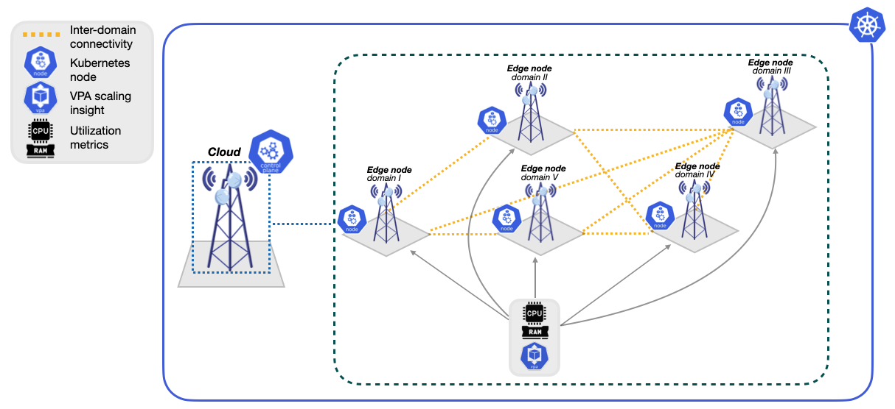
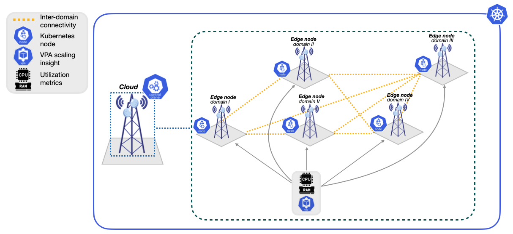

Publications
KARMA
A zero-touch, DRL-driven autoscaling framework for cloud-native Kubernetes edge environments, enabling adaptive and stable orchestration beyond heuristic HPA policies.
IEEE GLOBECOM 2025 · Taipei, Taiwan
 

ADDAPT6G
Distributed, cloud-native, MARL decision-making framework for 6G networks that leverages Dueling Double Deep Q-Networks to optimize containerized network function placement and migration.
IEEE ICC 2025 · Montreal, QC, Canada
Scaling OPS
SLA-aware autoscaling framework for Kubernetes that combines online RL-based scaling with an offline RLOps training pipeline
IEEE NFV SDN 2025 · Athens, Greece · co-author
-
An Innovative Multi-Scale Strategy-Based Decision Engine for Zero-Touch Management and Orchestration in 6G
IEEE CAMAD 2024 · Athens, Greece · co-author IEEE Xplore